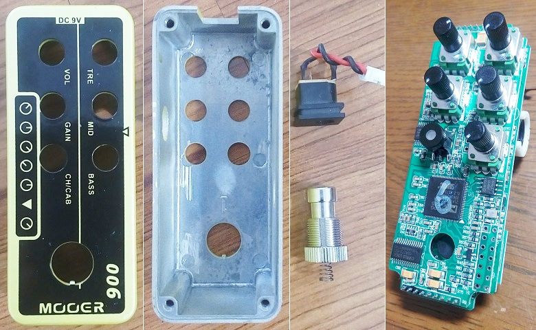

MOOER Micro Preamp 006 分解
2018年08月01日 カテゴリー：修理・改造・解析

前回特性測定したMOOER Micro Preamp 006ですが、ろくに弾きもせずに分解してしまいました。中身がどんなものか記録しておきます。
フットスイッチはバネで基板上のスイッチを押すタイプです。長押し機能が実装されている関係で、オンオフ切替やチャンネル切替はフットスイッチを押した時ではなく離した時になっています。DCジャックは基板直付けではなくコネクタが使われていました。ケースのみの大きさは縦91mm横37mm高さ31mmで、縦横はHAMMOND 1590Aより1.5mmほど小さいです。基板は2枚重ねで、はんだ付けされたピンヘッダを取り除かないと分解できません。無事に元に戻せましたが、結構大変でリスクが高いと思います。
▽基板写真
左側基板には黒いゴムの円柱があり、基板同士の隙間を保つために取り付けてあるようです。ジャック上側にはバイパス用と思われるリレー（HFD4/3）があります。定電圧レギュレータはμPC29M08とAMS1117です。
▽IC類写真
左写真右上のIC（印字「415 XTFM」）は415の左隣の文字がかすれていて役割がわかりませんでした。その他のICは下記の通りです。
・MC33078 → オペアンプ
・TLC2262 → オペアンプ
・CS4272 → オーディオコーデック（ADC/DAC）
・GD25Q41BT → フラッシュメモリ
・ADSP-21477 → DSP
・STM32F030F4P6 → マイコン